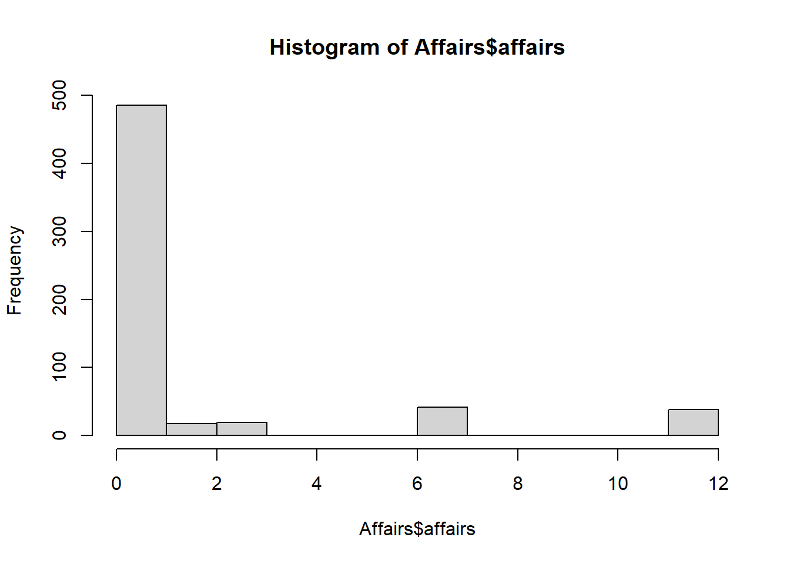

#|message: false
#|evaluate: false
library(tidyverse)
library(AER)
# Mínimo cuadrados ordinarios (OLS) o ecuación en forma reducida
mod.OLS <- lm(WKS ~ LWAGE + ED + UNION + FEM)
# Variables instrumentales en dos etapas (2SLS)
# Etapa 1:
mod.IV <- ivreg(WKS ~ LWAGE + ED + UNION + FEM | ED + UNION, data = CPS85)
# Etapa 2:
mod.IV_stage2 <- lm(WKS ~ LWAGE + ED + UNION + FEM, data = CPS85, weights = mod.IV$fitted.values)
stargazer::stargazer(mod.OLS, mod.IV, mod.IV_stage2,
type = "text",
title = "Resultados de la regresión OLS y 2SLS",
dep.var.labels = "Horas trabajadas (WKS)",
covariate.labels = c("Logaritmo del salario (LWAGE)", "Educación (ED)", "Sindicato (UNION)", "Mujer (FEM)"),
omit.stat = c("f", "ser"),
digits = 3)variables-instrumentrales
clase 8
Fuentes de endogeneidad
\[ E(\epsilon | X) = 0 \]
Si no se cumple, entonces la variable explicativa \(X\) es endógena. Esto puede ocurrir por:
Omissión de variables: Si hay una variable relevante que afecta tanto a la variable dependiente como a la independiente, y no se incluye en el modelo.
Medición errónea: Si la variable independiente está medida con error, esto puede introducir sesgo en la estimación.
Causalidad inversa: Si la variable dependiente afecta a la variable independiente, esto también puede causar endogeneidad.
Variables instrumentales
Una variable instrumental es una variable que se utiliza para corregir la endogeneidad en un modelo de regresión. Debe cumplir dos condiciones: 1. Relevancia: La variable instrumental debe estar correlacionada con la variable endógena.
\[ cov(Z, X) \neq 0 \]
- Exogeneidad: La variable instrumental no debe estar correlacionada con el término de error del modelo.
\[ cov(Z, \epsilon) = 0 \]
Mínimos cuadrados en dos etapas (2SLS o bmc2e)
El método de Mínimos Cuadrados en Dos Etapas (2SLS) es una técnica utilizada para estimar modelos con variables instrumentales. El proceso consta de dos etapas:
- Primera etapa: Se regresa la variable endógena \(X\) sobre la variable instrumental \(Z\) y otras variables exógenas. Esto produce un valor ajustado de \(X\), denotado como \(\hat{X}\).
\[ X = \alpha_0 + \alpha_1 Z + \alpha_2 W + u \] donde \(W\) son otras variables exógenas. La ecuación se puede reescribir para obtener el valor ajustado:
\[ \hat{X} = \hat{\alpha_0} + \hat{\alpha_1} Z + \hat{\alpha_2} W \]
Segunda etapa: Se regresa la variable dependiente \(Y\) sobre el valor ajustado \(\hat{X}\) y otras variables exógenas. \[ Y = \beta_0 + \beta_1 \hat{X} + \beta_2 W + v \]
Donde \(v\) es el nuevo término de error. La estimación de \(\beta_1\) es la que se busca, y se interpreta como el efecto causal de \(X\) sobre \(Y\).
Estimación por VI de una ecuación de oferta de trabajo
Suponga la siguiente ecuación de oferta de trabajo proviene de un sistema que modela el mercado laboral:
\[ horas_i = \alpha_0 + \alpha_1 salario_i + \alpha_2 educacion_i + \alpha_3 Union_i + \alpha_4 Fem_i + u_i \]
El problema radica en que el salario esta correlacionado con \(u\), se consideran dos conjuntos de instrumentos:
\[ Z_i = [1, educacion_i, Union_i, Fem_i] \]
\[ Z_i = [1, educacion_i, Union_i] \]
donde \(educacion_i\) es el nivel de educación del individuo, \(Union_i\) indica si el individuo es miembro de un sindicato y \(Fem_i\) indica si el individuo es mujer.
Ejemplo: estimación por variables instrumentales de una ecuación de oferta de trabajo.
::: callout-warning icon=false ## warning
Cuando utilizamos variables instrumentrales no le damos mucha importancia a la bondad de ajuste del modelo, ya que el objetivo es corregir la endogeneidad y no necesariamente mejorar el ajuste del modelo. Por lo tanto, no se reporta el R-cuadrado ni otras medidas de bondad de ajuste.
:::
Contraste de hipotesis
Instrumentos débiles
Cuales son los efectos?
Por un lado
Como contrasta la debilidad de los instrumentos?
Se estima el modelo por MCO y por MC2E
Para la variable endógena k se construye el llamado estadistico de Goodness of fit (GFI): \[ GFI = \frac{R^2_{MCO}}{R^2_{MC2E}} \]
Se construye el siguiente estadístico de contraste:
\[ F = \frac{(R^2_{MCO} - R^2_{MC2E})/(K-1)}{(1-R^2_{MCO})/(N-K)} \]
- Si solo hay un instrumento, entonces \(K=2\) y el estadístico de contraste es:
\[ F = \frac{(R^2_{MCO} - R^2_{MC2E})}{(1-R^2_{MCO})/(N-2)} \]
- Si \(F < 10\), entonces se dice que los instrumentos son débiles.
Ejemplo: Contraste de instrumentos débiles
#|message: false
#|evaluate: false
library(wooldridge)
wages <- wage1
mod.OLS <- lm(log(wage) ~ educ + exper + I(exper^2), data = wages)Si el nivel de significancia del instrumento es significativo, entonces se puede concluir que el instrumento es relevante. En caso de saber si es exógeno, se puede utilizar el estadístico de Hausman. Si el estadístico es significativo, entonces se puede concluir que el instrumento es exógeno.
Comparación de modelos logit, probit y MPL
En el modelo probit \(g(0) = 0.4\)
En el modelo logit \(g(0) = 0.5\)
En el modelo de máxima verosimilitud (MPL) \(g(0) = 0.6\)
Los coeficientes de estos modelos no tienen una interpretación directa como en el caso de la regresión lineal. En cambio, se interpretan como cambios en la probabilidad de que ocurra el evento de interés. Observando el signo de los coeficientes, se puede inferir si un aumento en la variable independiente aumenta o disminuye la probabilidad del evento.
Ejemplos practico
Histograma
#|message: false
#|warning: false
library(AER)Loading required package: carLoading required package: carDataLoading required package: lmtestLoading required package: zoo
Attaching package: 'zoo'The following objects are masked from 'package:base':
as.Date, as.Date.numericLoading required package: sandwichLoading required package: survivaldata("Affairs")
hist(Affairs$affairs)
# transformacion
Affairs$y <- as.numeric(Affairs$affairs > 0) # Convertur a variable binaria numericaPromedio de casos con affairs: 0.249584.
Estimacion
# Modelo MPL
MPL <- lm(y ~ age + yearsmarried + religiousness + occupation + rating,
data = Affairs)
mod_logit <- glm(y ~ age + yearsmarried + religiousness + occupation + rating,
data = Affairs, family = binomial(link = "logit"))
mod_probit <- glm(y ~ age + yearsmarried + religiousness + occupation + rating,
data = Affairs, family = binomial(link = "probit"))
stargazer::stargazer(MPL, mod_logit, mod_probit, type = "text", digits = 3)
===============================================================
Dependent variable:
-------------------------------------------
y
OLS logistic probit
(1) (2) (3)
---------------------------------------------------------------
age -0.007** -0.040** -0.022**
(0.003) (0.018) (0.010)
yearsmarried 0.018*** 0.105*** 0.060***
(0.005) (0.030) (0.017)
religiousness -0.054*** -0.323*** -0.184***
(0.015) (0.089) (0.052)
occupation 0.012 0.072 0.038
(0.009) (0.057) (0.033)
rating -0.088*** -0.468*** -0.273***
(0.016) (0.089) (0.053)
Constant 0.788*** 1.749*** 0.977***
(0.106) (0.628) (0.365)
---------------------------------------------------------------
Observations 601 601 601
R2 0.101
Adjusted R2 0.094
Log Likelihood -306.850 -307.295
Akaike Inf. Crit. 625.699 626.591
Residual Std. Error 0.412 (df = 595)
F Statistic 13.408*** (df = 5; 595)
===============================================================
Note: *p<0.1; **p<0.05; ***p<0.01En estos modelos no es importante el supuesto de heterocedasticidad debido a que los errores no son normales, por lo que no se debe de aplicar la prueba de heterocedasticidad.
Para comparar los coeficientes de los modelos, se puede utilizar la función summary() para obtener los valores de los coeficientes y sus errores estándar. Sin embargo, es importante recordar que los coeficientes de los modelos logit y probit no son directamente comparables con los de un modelo lineal, ya que representan cambios en la probabilidad de que ocurra el evento de interés.
Calculo para comparar:
\[ \frac{e^{\hat{\beta}}}{1 + e^{\hat{\beta}}} \]
Para calcular el efecto parcial
library(margins)Warning: package 'margins' was built under R version 4.5.1marg_logit <- margins(mod_probit)
marg_probit <- margins(mod_logit)
summary(marg_logit) factor AME SE z p lower upper
age -0.0064 0.0029 -2.1544 0.0312 -0.0121 -0.0006
occupation 0.0108 0.0094 1.1451 0.2522 -0.0077 0.0293
rating -0.0787 0.0142 -5.5274 0.0000 -0.1067 -0.0508
religiousness -0.0530 0.0145 -3.6438 0.0003 -0.0815 -0.0245
yearsmarried 0.0173 0.0048 3.5884 0.0003 0.0078 0.0267